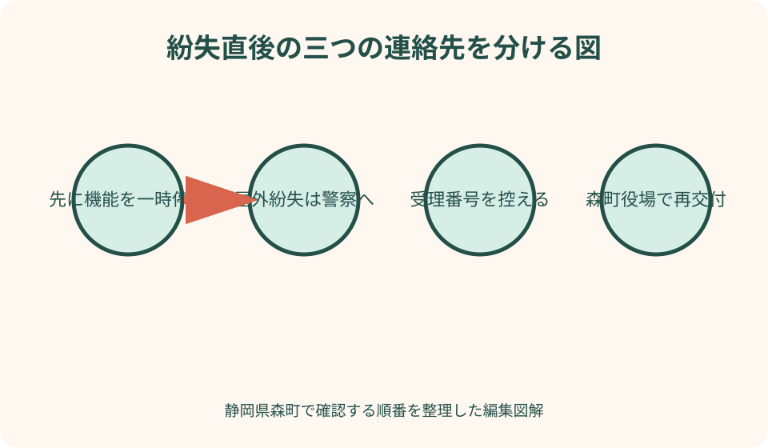
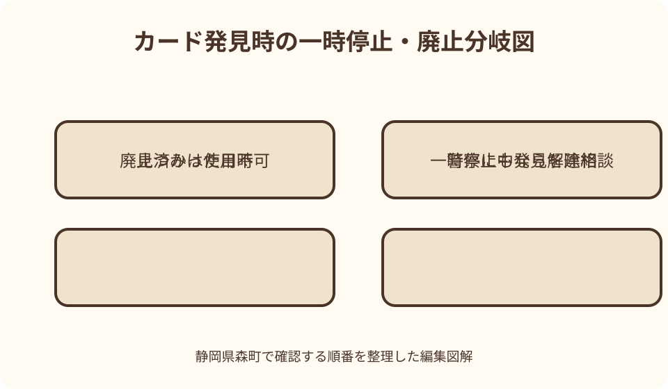

行政手続・証明書｜最終確認 2026-08-10
静岡県森町でマイナンバーカードを紛失したとき｜一時停止・警察届出・再交付の順番
マイナンバーカードをなくしたと気付いた直後は、探すこと、一時停止、警察への届出、役場での再交付が頭の中で混ざりがちです。しかし、最初に優先するのはカード機能を止めることです。その後、外でなくしたのか自宅内なのかを分け、警察の受理番号と森町役場の廃止・再交付へ進みます。見つかった場合の停止解除まで、場面別に整理します。

編集イラストなくしたと気付いたら捜索より先に一時停止する
マイナンバーカードが見当たらないとき、最初の判断は『どこで落としたか』を完璧に思い出すことではありません。国のマイナンバーカード総合サイトは、紛失・盗難時にカード機能の一時停止が必要だと案内しています。身近な場所にある可能性が高くても、外へ持ち出した可能性を否定できないなら、先に停止連絡を行います。
一時停止の連絡先はマイナンバー総合フリーダイヤルで、紛失・盗難による一時停止は24時間365日受け付けると国が案内しています。電話番号と音声案内の番号は変更や誤発信を避けるため、発信直前に総合サイトの問い合わせページで確認してください。検索広告やまとめサイトに表示された番号ではなく、公式ページからたどります。
カードの券面には氏名、住所、生年月日、性別、顔写真があり、ICチップには電子証明書が搭載されます。暗証番号が設定されているから放置してよいとは考えません。推測されにくい番号であっても、本人確認書類として現物を提示される可能性を考え、機能停止と警察届出を分けて進めます。
停止連絡をした時刻、連絡した人、受付で案内された次の行動をメモします。カード番号や暗証番号を家族の共有チャットへ書く必要はありません。『8月10日20時、一時停止連絡済み、警察届出は翌朝』のように進捗だけを残せば、別の家族が同じ電話を重ねずに済みます。
外でなくした場合は警察の受理番号まで控える
外出先で落とした、盗まれた可能性がある、紛失場所が自宅内と断定できない場合は、最寄りの警察署や交番へ遺失届または被害の相談をします。国の総合サイトは、再交付を希望する場合に警察へ届けて受理番号を受け取るよう示しています。届けた事実だけでなく、番号を控えるところまでが役場手続の準備です。
届出時は、最後にカードを確認した日時と場所、その後に立ち寄った場所、財布ごとなくしたのかカード単体かを整理します。正確でない位置を推測して断定するより、『最後に確認したのは森町内の店舗、帰宅後に気付いた』という事実の範囲で説明します。盗難の疑いがある場合は、自分で犯人を探さず警察の案内に従います。
遺失届の受付方法は警察の運用に従います。オンラインで届出できる地域・品目があっても、緊急性、盗難、本人確認書類の紛失を同じ扱いと決めつけません。静岡県警察の公式案内を確認し、急ぐ事情や事件性がある場合は最寄りの警察署・交番へ相談します。
財布を丸ごとなくしたときは、マイナンバーカードだけでなく、運転免許証、キャッシュカード、クレジットカードなど別々の停止先があります。マイナンバー窓口が銀行カードまで止めてくれるわけではありません。中身を一覧にし、各発行者へ一件ずつ連絡した時刻を記録します。
自宅内の紛失と屋外の紛失を同じ書類で扱わない
カードを自宅内でなくしたことが明らかで、警察へ遺失届を出していない場合は、その事情を森町役場へ率直に伝えます。国の総合サイトも、家の中でなくして警察へ届けていない場合は、再交付申請時にその旨を明らかにするよう案内しています。受理番号がないからといって架空の紛失場所を作ってはいけません。
自宅内を探すときは、停止連絡を後回しにせず、範囲を区切ります。カードを最後に使った日、確定申告やコンビニ交付で取り出した場所、本人確認書類をまとめた封筒、通院時の鞄を順に確認します。家族全員で無秩序に物を動かすと、見つけた人が別の場所へ移してしまうため担当を決めます。
高齢の家族のカードでは、本人が『なくした』と思っていても、家族が保管場所を変えた可能性があります。本人の部屋を無断で広く探す前に、直近で手続を手伝った人、施設職員、通院同行者へカードを預かっていないか確認します。ただし暗証番号を聞き回らず、現物の所在だけを尋ねます。
自宅内紛失でも、再交付するなら旧カードの廃止手続が関係します。後から旧カードが出てきても、すでに廃止されたカードを再び有効にはできません。一時停止の段階で見つかったのか、廃止・再交付申請後に見つかったのかで扱いが変わるため、役場へ進捗を正確に伝えます。

森町役場では停止ではなく廃止・再交付の相談をする
電話による一時停止は緊急の防御であり、新しいカードを自動発行する手続ではありません。見つからず再交付を希望する場合は、住民登録のある森町役場で紛失カードの廃止と再交付を相談します。国の案内も、再交付時に紛失カードの廃止手続が必要だと明記しています。
森町は役場一階ロビーにマイナンバーカード専用窓口を設け、カード関連手続を扱うと案内しています。庁舎の配置、受付時間、予約の要否は実行日に町公式ページで再確認します。山間部から向かう人は、書類不足による再訪を避けるため、受理番号、本人確認書類、写真の要否、手数料の支払方法まで先に質問します。
再交付申請に必要な本人確認書類は、手元に残っている書類によって組合せが変わる可能性があります。財布ごとの紛失では、運転免許証なども同時に失っていることがあります。『顔写真付きが一枚もない』と最初に伝え、健康保険の資格確認書など手元の書類名を列挙して町から案内を受けます。
本人以外が申請や受取をする場合は、法定代理人か任意代理人か、本人が来庁困難である理由、必要な委任・疎明資料が関係します。家族だから当然に代行できるとは限りません。申請を手伝うことと、新しいカードを代理で受け取ることも分けて確認してください。
特急発行を使えるかは紛失日と申請日で確認する
紛失による再交付は、国の特急発行・交付制度の対象に含まれます。原則として、対象事由が発生してから一定期間内に住民登録地の市区町村窓口で申請する制度です。『急ぎだと言えばいつでも特急になる』わけではないため、紛失に気付いた日と申請予定日を森町へ伝え、対象期間を確認します。
国の現行案内では、特急発行は原則一週間程度で登録住所へ届く仕組みですが、申請内容、住所地、郵便事情などで日数が増える場合があります。旅行や申告の予定へ『必ず一週間』と書き込まず、受取方法と届かない場合の連絡先を申請時に確認します。
紛失による再交付には手数料がかかる案内があり、特急発行では電子証明書の搭載有無によって金額が分かれます。金額は国の最新ページと森町窓口で申請日に確認し、この記事の記載だけを支払根拠にしないでください。災害など本人の責めによらない事情では扱いが異なる可能性があるため、紛失理由を正確に説明します。
特急発行を選ばない通常の再交付も、申請した当日にカードが手渡されるとは限りません。森町から交付通知書が届き、本人確認のうえで受け取る流れや、条件を満たす場合の郵送が関係します。申請日、交付通知の到着、受取日という三つの日付を別々に管理します。
良い点
一時停止、警察届出、廃止・再交付を三段階に分ける良い点は、夜間や休日でも最初の防御を始められることです。役場が開くまで何もしないのではなく、24時間の停止窓口を使い、その後に警察と森町役場の開庁時間へ合わせて進められます。
受理番号と連絡時刻を残せば、家族間の引継ぎも明確になります。『警察へ話したらしい』では再交付の準備になりません。届出先、届出日、受理番号、紛失場所の区分を一枚に書くことで、本人が動揺していても、役場へ必要な事実を順序立てて伝えられます。
特急発行の対象条件を早く確認することにも実益があります。紛失日から申請までの期間が条件になるため、見つかるかもしれないと長く待つ判断と、早期再交付を希望する判断の差が見えます。一時停止をしたうえで捜索期限を決め、見つからなければ町へ相談する形にできます。
新しいカードを受け取るまでの代替手段を考えるきっかけにもなります。本人確認、個人番号の提示、医療機関の資格確認、住民票取得は、それぞれ代わりになる書類や相談先が違います。カード一枚がない状態を『何もできない』と一括りにせず、目的別に解決できます。
注文したい点
利用者として注文したいのは、一時停止と廃止が似た言葉でありながら、見つかった後の結果が大きく違う点です。一時停止中なら町窓口で解除して再利用できる可能性がありますが、廃止後は旧カードを戻せません。公式案内には、この分岐が一目で分かる表示を期待します。
森町のカード交付、専用窓口、出張申請の情報は別ページにあり、紛失者が必要とする『今すぐ停止する番号』から『再交付時の持ち物』までが一画面で完結しているわけではありません。緊急時ほどページ間を読み回る負担が大きいため、紛失専用の町案内と国の停止窓口への導線が明確であることが望まれます。
本人確認書類をまとめてなくした人には、一般的な持ち物一覧だけでは不足します。残っている書類の組合せ、照会による確認、代理受取の条件は個別性があります。窓口へ行ってから不足を知るのではなく、電話で『財布ごとの紛失』を伝えたときに確認項目を案内してもらう必要があります。
特急発行は名称から即日交付のように受け取られやすいものの、国の案内は原則一週間程度であり、必着保証ではありません。申請期限、郵送先、受取方法、手数料をセットで理解できる説明が重要です。急ぐ人ほど『特急』という一語だけで旅行や提出期限を組まないよう注意が要ります。
カードが見つかったら停止した段階を確認する
一時停止の連絡後にカードが見つかった場合、コールセンターへ電話するだけで元に戻るとは限りません。国の総合サイトは、市区町村窓口で一時停止解除の手続を行えば継続利用できると案内しています。森町役場へカードを持参し、本人確認書類や暗証番号など必要物を確認します。
見つけた時点ですでに紛失カードの廃止を届けていた場合は、同じ現物でも有効なカードへ戻せません。再交付申請を取り下げられるか、新カードの受取前に旧カードをどう扱うかは自己判断せず、森町へ申請状況を伝えます。穴を開けたり切断したりする前に返納方法を確認してください。
警察へ遺失届を出した後に見つかった場合は、警察にも発見した旨を連絡します。鉄道会社、店舗、施設から返還された場合も、受取日時と場所を記録します。警察側の届出を取り下げればカード機能も自動復旧するわけではなく、警察と森町の手続は別です。
停止解除後は、コンビニ交付、マイナポータル、健康保険証利用など、必要なサービスを一度に試し続けないようにします。暗証番号を連続して誤るとロックにつながるため、解除処理の反映時期と暗証番号の状態を窓口で聞き、サービスごとの公式案内に従います。
健康保険証利用と電子証明書への影響を分ける
マイナンバーカードを健康保険証として使っている人は、紛失すると医療を受けられないと決めつけず、加入先の保険者や受診予定の医療機関へ資格確認の代替方法を尋ねます。カードの再交付手続と、受診時に保険資格を示す方法は別の窓口・別の確認です。体調が悪いときに役場手続を先に終える必要はありません。
再交付されるカードへ電子証明書を搭載するかは、申請内容と手数料にも関係します。オンライン申請、マイナポータル、コンビニ交付を使う人は、『本人確認書類としてカードだけ欲しい』場合と必要機能が違います。申請時に普段の用途を伝え、暗証番号設定も含めて確認します。
スマートフォンへ電子証明書を搭載している人は、カード紛失とスマートフォン紛失を混同しません。国の総合サイトにはスマートフォン紛失時の一時停止案内もあります。どちらをなくしたのか、両方なのかを確認し、カードとスマートフォンそれぞれの停止対象をコールセンターへ伝えます。
e-Taxやオンライン契約の期限が迫っている場合、再交付カードが届く日だけを頼りにしません。提出先が認める紙手続、別の本人確認、期限内相談の方法をその機関へ確認します。森町役場はカード再交付の窓口ですが、個々の電子申請の期限延長を決める窓口ではありません。

家族のカードをなくしたときの支援範囲
一時停止は原則本人からの連絡ですが、国の案内では代理人からの申出も受け付けるとされています。高齢、障害、入院などで本人が電話しにくい場合、家族だけで諦めずコールセンターへ関係と状況を説明します。本人の氏名や生年月日など確認を求められる情報は、周囲に聞こえない場所で扱います。
15歳未満の子どもや成年被後見人では、法定代理人の関与が必要になる手続があります。親が自分のカード紛失と同じ持ち物で進められるとは限りません。戸籍、親権、登記事項など関係を示す書類が必要か、森町へ子どもの年齢と法定代理人の状況を伝えて確認します。
施設入所中や入院中の家族は、申請と受取で来庁困難を示す資料や代理権の確認が関係する可能性があります。施設職員へカードや暗証番号を預けることを当然の前提にせず、本人、家族、施設、森町の役割を分けます。訪問による申請支援を利用できるかも町公式の条件を確認します。
家族の手助けで最も重要なのは、停止連絡済みか、警察受理番号があるか、廃止申請済みかを一つの記録へ集めることです。暗証番号そのもの、カードの写真、個人番号を家族グループへ投稿する必要はありません。手続状況だけを共有すれば、安全と引継ぎを両立できます。
森町での移動と再訪を減らす準備
森町の町なかから役場へ向かう場合と、三倉・天方など北部から向かう場合では、同じ窓口手続でも移動負担が違います。出発前に専用窓口の場所、開庁時間、申請にかかる見込み、写真撮影の扱いを確認します。水曜延長を利用したい場合は、再交付申請が延長対象かも尋ねます。
財布ごと紛失した人は、役場へ行く交通手段にも注意が必要です。運転免許証をなくしているなら、自分で運転してよいと考えず、警察や免許窓口の案内を確認します。家族送迎、公共交通、タクシーを比較し、本人確認書類の再取得順も無理のない計画にします。
役場へ持参する袋は、『警察受理番号』『残っている本人確認書類』『町から指定された申請書類』『支払手段』に分けます。個人番号を確認するために住民票が必要なのかを自己判断で先に取得せず、再交付申請に本当に必要な書類を町へ聞いてから準備します。
新カードの受取方法は、申請方法や本人の状況で変わります。郵送を選べると思って不在にしたり、代理人が当然受け取れると思ったりしないよう、交付通知書の記載を読みます。受取時の本人確認書類も再度必要になるため、申請日に提出したから終わりとは考えません。
代案・結論
夜間や休日に紛失へ気付いたときの代案は、役場の開庁を待つことではなく、24時間対応の一時停止を先に行うことです。警察署・交番へすぐ行けない場合も、届出方法を警察公式で確認し、翌日の行動を決めます。緊急の盗難や身の危険があるときは通常の遺失物手順より110番を優先します。
本人確認書類がすべてなくなった場合は、再交付を諦めず、残っている書類を森町へ具体的に伝えます。年金関係書類、資格確認書、学生証など、何が本人確認に使えるかを自分で採点しません。町が示す組合せを準備し、照会や追加書類が必要なら再訪日まで決めます。
再交付を待つ間に証明書や医療資格の確認が必要なら、目的ごとに代替手段を探します。住民票は森町の窓口、医療は保険者と医療機関、税の電子申請は提出先というように分けます。紛失カードの一時停止を解除せずに使おうとすることは代案になりません。
結論は、停止、警察、森町役場の順です。まずカード機能を止め、屋外紛失なら受理番号を得て、見つからなければ廃止・再交付へ進みます。見つかったら廃止前か後かを確認し、廃止前なら停止解除を相談します。この分岐を記録すれば、焦って同じ窓口を往復する可能性を下げられます。
大石の視点
大石の視点では、カード紛失時に家族へ必要なのは、個人番号を共有することではなく、次の行動を共有することです。停止した時刻、警察の受理番号、森町役場へ行く日、再交付の進捗だけで十分です。秘密情報を増やさず、連絡の重複を防ぐ記録が暮らしを守ります。
森町のように移動距離が世帯ごとに違う地域では、『役場へ行って聞く』を最初の一手にすると負担が大きくなります。電話で停止し、警察へ届け、町へ必要物を聞いてから一度の来庁へまとめる。窓口ごとの役割を切り分けることが、山間部の家族にも現実的な手順です。
紛失後は不安から、身分証の写真や個人番号をスマートフォンへ保存して備えたくなるかもしれません。しかし、保存場所が新たな漏えい点になれば本末転倒です。カードそのものの画像を共有する代わりに、公式の停止窓口へたどる方法と、町の担当課だけを家族の連絡帳へ残します。
再交付後にすべきことは、古い番号メモを捨てるだけではありません。新カードの受取日、電子証明書の有無、次の有効期限、利用を再開したサービスを確認します。カードをなくさない仕組みは、首掛けや財布へ固定することだけでなく、『使ったら同じ保管場所へ戻す人』を家族で決めることから始まります。
発見・未発見の分岐を一枚に残す
記録の一行目には、最後にカードを確認した日時と場所、一時停止を申し出た日時を書きます。二行目には、自宅内紛失か屋外紛失か、警察届出の有無、受理番号を記します。三行目には、カードが見つかったか、廃止申請をしたかを書き、この二つを同じチェック欄にしないようにします。
カードが見つかった場合は、発見日時、発見場所、停止解除を申請した日を追記します。警察届出済みなら警察への連絡も残します。再交付申請後なら旧カードを使用せず、森町から受けた返納・処分の指示を書きます。『見つかった』という一語だけでは、その後の有効性を判断できません。
見つからない場合は、森町へ再交付を相談した日、通常発行か特急発行か、手数料、受取方法を記します。発行までの日数は予定ではなく町の案内として記載し、配達遅延も想定します。旅行や申告へ使う日があるなら、新カードが間に合わない場合の代替書類も隣に書きます。
この記録は、個人番号や暗証番号を書かなくても機能します。紙なら施錠できる場所、データなら閲覧者を限定した場所へ保存し、手続完了後は不要な警察受理番号や本人確認書類の写しを漫然と残しません。必要な経過だけを残すことが、次の紛失対策にもなります。
当日確認する公式情報と最終チェック
最初に開くのは、マイナンバーカード総合サイトの紛失FAQと電話問い合わせページです。停止窓口の番号と受付を確認し、電話を終えたら受付時刻を残します。次に静岡県警察の遺失物案内で届出方法を確認し、最後に森町公式のマイナンバー窓口案内を開きます。
森町役場へ向かう前は、本人確認書類、警察受理番号、紛失状況、本人来庁か代理か、電子証明書を必要とするかを確認します。特急発行を希望するなら、紛失日からの経過日数も伝えます。写真、申請書、手数料は最新の町回答に従い、古い体験談を持ち物表にしません。
申請時には、旧カードの廃止が完了する時点、見つかった場合の扱い、新カードの受取方法、電子証明書の搭載、暗証番号設定を確認します。健康保険証利用やマイナポータル連携が自動でどこまで引き継がれるかは、サービスごとの公式案内へ戻ります。
最終チェックは『停止済み』『警察届出済みまたは自宅内紛失と申告』『廃止・再交付を町へ相談』『受取方法を確認』の四点です。すべてを同日に終える必要はありません。今どの段階にいるかを本人と家族が同じ言葉で共有できれば、紛失対応は次の一手へ確実につながります。
公式情報・確認先
掲載内容は次の一次情報を基礎に整理しました。営業、料金、催し、交通は変わるため、出発前または手続き前にリンク先で最新情報を確認してください。
- 【令和8年度】同報無線による町長からのお知らせ（マイナンバーカード専用窓口の案内）（静岡県森町、2026-08-10確認）
- マイナンバーカード交付までの手続き（静岡県森町、2026-08-10確認）
- マイナンバーカードの出張申請をご利用ください（静岡県森町、2026-08-10確認）
- マイナンバーカードなどを紛失した場合（地方公共団体情報システム機構（マイナンバーカード総合サイト）、2026-08-10確認）
- 特急発行・交付制度による申請方法（地方公共団体情報システム機構（マイナンバーカード総合サイト）、2026-08-10確認）
- 落とし物や忘れ物をしたときは（静岡県警察、2026-08-10確認）